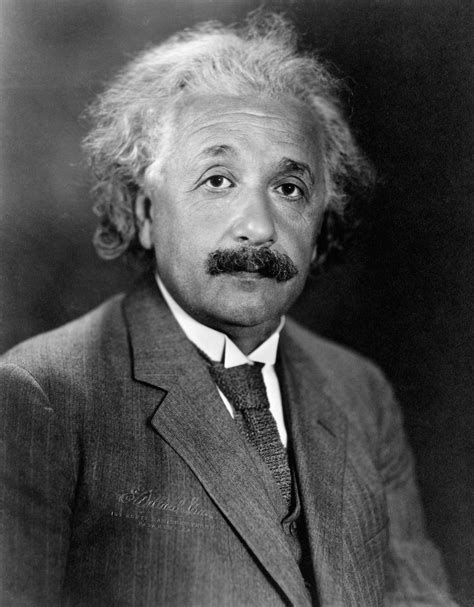
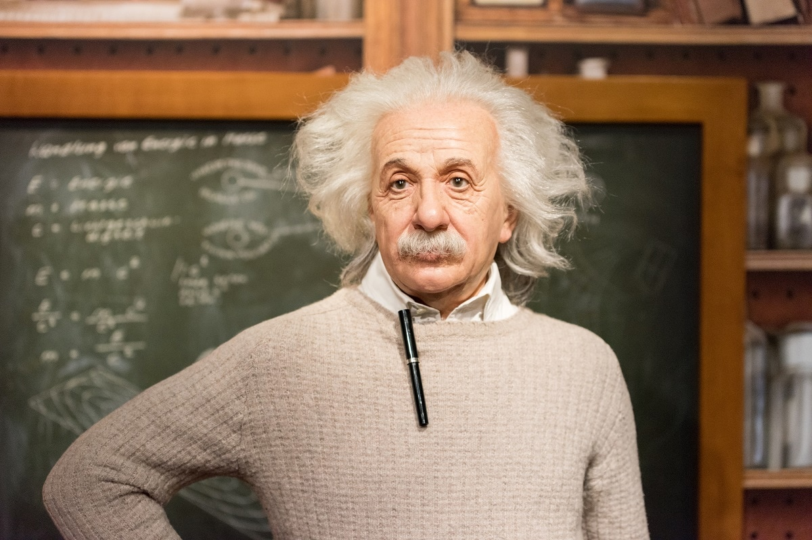

Einstein je bil sin judovskih priseljencev. Njegov oče Herman Einstein je bil trgovec, mati Paulina Einstein, rojena Koch, je bila hči premožnejšega trgovca z žitom. Njegov oče je za kratko obdobje odprl majhno trgovino z elektrotehniškimi potrebščinami (njegov stric je prodajal dinamo). Starša sta se poročila v Stutgart-Bad Cannstattu. Rojstna hiša na Bahnhofstraße blizu železniške postaje in celotna soseščina je bila uničena leta 1944 med zavezniškim bombardiranjem. Tam je danes majhen spomenik. Hodil je v katoliško osnovno šolo. Na materino vztrajanje se je učil igrati violino. Pri petih letih mu je oče pokazal žepni kompas in Einstein je odkril, da je nekaj v »praznem« prostoru delovalo na iglo. To izkušnjo je kasneje opisal kot največje razodetje v svojem življenju. Čeprav je gradil modele in mehanske naprave, so imeli njegovo učenje za počasno, verjetno zaradi disleksije, preproste plahosti ali morda zaradi redke in nenavadne zgradbe njegovih možganov, (ki so jih preučili po njegovi smrti). Kasneje je svoji počasnosti pripisoval razvoj teorije relativnosti in dejal, da je razmišljal o prostoru in času kasneje kot večina otrok in zaradi tega uporabil bolj razvit razum. Druga, novejša teorija o njegovem miselnem razvoju pojasnjuje, da je bolehal za Aspergerjevim sindromom, bolezenskim stanjem, povezanim z avtizmom. Einstein se je začel učiti matematike pri približno dvanajstih letih. Obstajale so ponavljajoče govorice, da je kasneje padel iz matematike, kar pa ni res. Do tega je prišlo le zaradi poznejših sprememb v ocenjevanju. Dva njegova strica sta v poznem otroštvu in zgodnji mladosti vzpodbujala njegova umstvena zanimanja in mu predlagala in priskrbela knjige o znanosti in matematiki. Leta 1884 se je družina preselila v Zendling in leta 1889 je začel obiskovati Luitpoldovo gimnazijo v Münchnu. Šolo je že od vsega začetka občutil kot nasilje. O njegovih otroških težavah in neuspehih v srednji šoli je veliko poročil, ki pa jih kaže jemati z zadržkom. Res je začel govoriti pozno in je do 7 leta povedano tiho ponavljal, vendar se je od vsega začetka izražal v stavkih. V srednji šoli mu ni šlo slabo, bil pa je samosvoj, saj se je učil predvsem tisto, kar ga je zanimalo. Zelo dober je bil v matematiki in naravoslovju in dober v latinščini. Sodobni tuji jeziki in posebno grščina pa so mu povzročali težave. K temu je treba dodati, da so bile šole tedaj drugačne kot danes. Res je, da mu je profesor grščine rekel, da iz njega nikoli nič ne bo, sicer pa Einstein ni veljal za slabega dijaka. Učitelji se niso niti približno zavedali njegovih zmožnosti, vendar so te prišle na dan kasneje. Podobni primeri niso tako redki. Leta 1894 se je družina zaradi slabega poslovanja očetove elektrotehniške trgovine preselila v Pavio pri Milanu, kjer se je pozneje očetu obrnilo še na slabše. Einstein je ostal v Münchnu, kjer je živel v malem podnajemniškem stanovanju, da bi končal zadnji letnik gimnazije in maturiral. Počutil se je tako osamljenega, da si je po neki neprijazni pripombi profesorja pridobil zdravniško spričevalo, izstopil in zapustil šolo. Še pred koncem šolskega leta je odpotoval, ne da bi maturiral, k staršema v Pavio in se odpovedal nemškemu državljanstvu. Nek življenjepisec je pripomnil, da je to storil v zadnjem hipu. Če bi namreč počakal še kak mesec, se zaradi vojaščine ne bi mogel izseliti zakonito. Na Švicarski državni tehniški visoki šoli (ETH) v Zürichu je leta 1895 opravljal sprejemni izpit. Leta 1896 so mu svetovali naj se vpiše v zadnji letnik srednje šole. Maturiral je na kantonski srednji šoli v Aarau. Švicarske šole so bile znatno manj toge kot nemške in so bolj upoštevale posebnost učencev. Leta v Aarau se je spominjal kot enega izmed svojih najprijetnejših obdobij. Brez sprejemnega izpita se je vpisal na pedagoško smer Politehnike ETH, kjer je začel študirati matematiko in fiziko. Leta 1898 je spoznal srbsko sošolko in prijateljico Nikole Tesle Milevo Marić. Pri študiju mu je bil v veliko oporo Marcel Grossmann, ki mu je posojal svoje vestne zapiske iz predavanj in prepoznal njegovo nadarjenost. Pri učiteljih je Einstein veljal za povprečnega in nedelavnega, vendar je samostojno in zavzeto študiral tisto, kar ga je zanimalo. Med študijem se je zbližal z Marićevo. Leta 1900 je diplomiral, leto kasneje pa je prejel švicarsko državljanstvo. V nekem bančnem predalu v Berkeleyju je eden izmed izdajateljev Zbranih del Alberta Einsteina, ki so začela izhajati leta 1987, po pravem detektivskem podvigu našel 500 dotlej neznanih pisem. Na podlagi teh pisem je bilo mogoče dobiti o mladem Einsteinu precej bolj zaokroženo sliko. Pisma so odkrila, da je imel z Marićevo januarja 1902 nezakonsko hčerko Lieserl, za katero se je izgubila vsaka sled. Ali je zgodaj umrla, ali je odrasla pri Milevinih sorodnikih, ali pa sta jo starša dala v posvojitev.
V prvi objavi »čudežnega« leta 1905 je Einstein postavil domnevo, da je svetloba sestavljena iz majhnih delcev, svetlobnih kvantov - čeprav je takrat vladala splošna enotnost glede valovne narave svetlobe. Takrat je fizik Maxwell predvideval, da svetloba potuje po snovi eter. V svoji drugi objavi je Einstein razložil Brownovo gibanje kot statistično gibanje delcev, namreč molekul, katerih obstoja v tistem času še niso zagotovo potrdili. V tretjem delu je Einstein skoraj v popolnosti razvil posebno teorijo relativnosti. V dodatku je proti koncu leta 1905 sledila tudi enačba E = mc². Einsteinovega dosežka ne zmanjša dejstvo, da so bile številne enačbe teorije relativnosti znane že pred njegovimi objavami. Kajti šele Einsteinove fizikalne razlage so dale količinam in zvezam med njimi smisel. V objavah iz leta 1905 se kažejo nekatere značilnosti Einsteinovega znanstvenega dela: pogledal je v ozadje na videz zanesljivih in splošno uveljavljenih predpostavk in zbral dovolj poguma, da je ovrgel običajne poglede ter jih nadomestil z novimi presenetljivimi razlagami. Pri tem je izhajal iz maloštevilnih eksperimentalnih rezultatov in brez predsodkov delal brezkompromisne logične zaključke. Njegov miselni tok lahko pogosto prikažemo na nekaj straneh z relativno majhno matematično zahtevnostjo. Nato je leta 1915 odkril in leta 1916 objavil splošno teorijo relativnosti ter vpeljal kozmološko konstanto. Leta 1917 pa je razvil teorijo, da je prostor-čas ukrivljen, kar so uspeli dokazati le dve leti po objavi teorije. Edwin Hubble je leta 1929 odkril, da se Vesolje širi, in tako dokazal, da je bila Einsteinova kozmološka konstanta napačna. Druga Einsteinova zmota pa je bila, da je s pomagačema v trojici EPR poskušal dokazati, da kvantna mehanika ni nekaj glavnega v fiziki in da prevladuje zdravi razum, ne pa prepletanje delcev, interferenca itd. Pozneje je moral priznati kvantno mehaniko kot nekaj vodilnega v fiziki, ker se je ujemala s teorijo relativnosti.
17. aprila 1955 je Einstein doživel notranjo krvavitev, ki jo je povzročila ruptura anevrizme trebušne aorte, ki jo je pred tem kirurško utrdil Rudolph Nissen leta 1948. Osnutek govora, ki ga je pripravljal za televizijski nastop v počastitev sedme obletnice države Izrael, je odnesel s seboj v bolnišnico, vendar ga ni dočakal dokončati. Einstein je zavrnil operacijo z besedami: "Hočem iti, ko hočem. Neokusno je umetno podaljševati življenje. Svoje sem opravil; čas je, da grem. To bom naredil elegantno." Umrl je na univerzi. Medical Center of Princeton v Plainsboroju zgodaj naslednje jutro v starosti 76 let, ko je nadaljeval z delom do konca. Med obdukcijo je patolog Thomas Stoltz Harvey odstranil Einsteinove možgane za ohranitev brez dovoljenja njegove družine, v upanju, da bo nevroznanost prihodnosti lahko odkrila, zakaj je bil Einstein tako inteligenten. Einsteinovi posmrtni ostanki so bili kremirani v Trentonu v New Jerseyju, njegov pepel pa je bil raztresen na nerazkriti lokaciji. V spominskem predavanju 13. decembra 1965 na sedežu Unesca je jedrski fizik J. Robert Oppenheimer povzel svoj vtis o Einsteinu kot osebi: »Bil je skoraj povsem brez prefinjenosti in popolnoma brez posvetnosti ... Vedno je bil z njim čudovita čistost hkrati otročje in globoko trmasto." Einstein je svoje osebne arhive, knjižnico in intelektualno premoženje zapustil Hebrejski univerzi v Jeruzalemu v Izraelu.

| Priznanje | Leto |
|---|---|
| Nobelova nagrada za fiziko | 1921 |
| Copleyjeva medalja | 1925 |
| Matteuccijeva medalja | 1921 |
| Zlata medalja Kraljevskega astronomskega društva | 1926 |
| Max Planckova medalja | 1929 |
| Barnardova medalja za zaslužno znanost | 1920 |
| Franklinova medalja | 1935 |
V preteklih letih sem prebral nekaj biografij profesorja Einsteina in ugotovil, da so njegove osebne lastnosti in navade prav tako fascinantne kot njegov genij svetovno znanega fizika. Ko je živel blizu severne obale vzhodnega Long Islanda, so ga domačini dokaj pogosto videli, kako vesla z majhnim čolnom na Long Island Sound in tam sam sedi s palico in kolutom ter lovi ribe več ur. Vendar pa ni bil ne-približuj se mi napuhana slavna oseba. Veliko večerov se je pojavil s svojo violino in igral klasične skladbe z nekaterimi domačini, ki so se neformalno zbrali v dnevni sobi kakšnega fanta, samo da bi uživali v glasbi in družbi drug drugega. Velikokrat, ko so se udeležili velike javne prireditve v njegovo čast, je bila večina gostov navdušena, da so tam in srečajo Velikega človeka. Ko so vsi hodili po sprejemni dvorani s koktajli v rokah in se pozdravljali, je bilo mogoče videti profesorja Einsteina, kako sam sedi v kotu z majhnim papirjem in svinčnikom ter tiho izvaja fizikalne izračune.